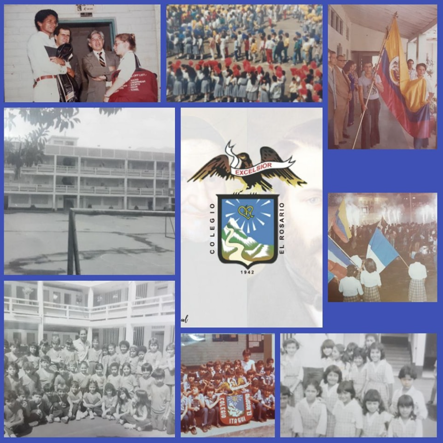

Historical Review
Learn about the history, evolution, and institutional growth that has shaped the path of our educational community.
History of El Rosario School of Itagüí
El Rosario School of Itagüí is a social and educational work of the Society of Saint Vincent de Paul, El Rosario Conference, founded on March 1, 1942, considered the “Great Work.” Its first president was Mr. Félix Montoya, and the first secretary was Rubén Vélez.
The first meeting of the conference was attended by Mr. Pedro Estrada González, the donor of the land and the building where El Rosario School currently operates. The name of the institution was the will of the same donor, who also helped with small monthly contributions to pay the first teachers.
The School began with 47 students in different courses. The first principal was Jesús Correa. In 1943, Ernesto Saldarriaga assumed the position of principal and received the first visit from national inspectors. This first inspection visit included well-known educators from the Ministry of Education, Federico Arbeláez Lema and Salomón Rengifo Reina.
In 1952, the conference entrusted the School to the community of the Reverend Marist Brothers. During this stage, Brother Ildefonso José began as principal and Brother Tomas Antonio as secretary.

In December 1961, El Rosario School of Itagüí delivered its first graduating class of high school students to Colombian society, composed of 25 students.
In December 1968, the administration of the School was returned by the Marist Brothers to the Society of Saint Vincent de Paul, El Rosario Conference.
Institutional Timeline
1942 - Foundation of the School
El Rosario School of Itagüí was founded as a social and educational work of the Society of Saint Vincent de Paul, El Rosario Conference, on March 1, 1942, considered the “Great Work.”
1942 - Donation of Land
Mr. Pedro Estrada González attended the first conference meeting and donated the land and the building where El Rosario School currently operates.
1942 - Beginning of Activities
The School began operations with 47 students in different courses. Its first principal was Jesús Correa.
1943 - New Principal and National Inspection
Ernesto Saldarriaga assumed the principalship and the School received its first visit from national inspectors from the Ministry of Education, including Federico Arbeláez Lema and Salomón Rengifo Reina.
1952 - Administration by the Marist Brothers
The conference entrusted the School to the Marist Brothers. Brother Ildefonso José began as principal and Brother Tomas Antonio as secretary.
1961 - First Graduating Class
In December 1961, the School delivered its first graduating class of high school students to Colombian society, composed of 25 students.
1968 - Return to the Society of Saint Vincent de Paul
In December 1968, the Marist Brothers returned the administration of the School to the Society of Saint Vincent de Paul, El Rosario Conference.
Institutional Commitment
This history reflects the constant growth of the institution, its commitment to the community, and its continuous effort to provide quality education, inclusion, and opportunities for all.